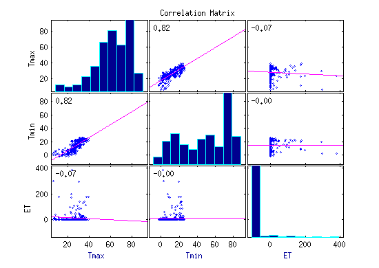

Lesson 1: Data access and data cleaning
Author: Erhu Du
Supervisor: Neal Davis
University of Illinois at Urbana-Champaign
Fall 2015
Contents
Data description and data access
The data used in this tutorial is weather data of Coleto Creek Reservoir from 2003 to 2014. The data is requested from NOAA (http://www.noaa.gov/), including 4197 daily weather observations of evaporationtranspiration, precipitation, maximum temperature, minimum temperature. The colum of the data is [Latitude, Longitude, Date, ET, Prcp, Tmax, Tmin].
To access the data from PC, we can use textread function:
clear all mydata = textread('data_ColetoCreek.csv', '', 'delimiter', ',','emptyvalue', NaN,'headerlines',1); colname = {'Latitude', 'Longitude', 'Date', 'ET', 'Precip','Tmax','Tmin'};
Data cleaning
A lot of the raw data have missing value and outliers. In this tutorial, we will focuse on Tmax and Tmin data to demonstrate how to clean missing values and outliers. Firstly, we want to see the distribution of Tmax and Tmin.
figure(1); hist(mydata(:, 6:7)); xlabel('Temperature'); ylabel('Number of occurence'); legend({'Tmax', 'Tmin'}, 'Location','northwest');
The missing values in this dataset are represented by '-9999'. We need to remove the rows with '-9999'.
outlierID_Prcp = find(mydata(:, 5) == -9999); % get the row number of missing data (outlier) outlierID_Tmax = find(mydata(:, 6) == -9999); outlierID_Tmin = find(mydata(:, 7) == -9999); outlierID = [outlierID_Prcp; outlierID_Tmax; outlierID_Tmin]; mydata = mydata(setdiff(1:4197, outlierID), :); % 'mydata' is the dataset without missing values clear outlierID_Prcp outlierID_Tmax outlierID_Tmin outlierID
Naturally, Tmax should be larger than Tmin for each day. However, we might see that some of the min temperature is larger than max temperature in this dataset. We can simply shift Tmax and Tmin for these observations.
ids = find(mydata(:, 6) < mydata(:, 7)); % find all the rows where Tmax < Tmin for i = 1:length(ids) value = mydata(ids(i), 6); mydata(ids(i), 6) = mydata(ids(i), 7); mydata(ids(i), 7) = value; end
Plot the histogram of temperature data again
figure(2); hist(mydata(:, 6:7)/10); xlabel('Temperature (C)'); ylabel('Number of occurence'); legend({'Tmax', 'Tmin'}, 'Location','northwest');

Time series and boxplot
figure(3); timeSeries = 1:4144; plot(timeSeries, mydata(:, 6)/10, timeSeries, mydata(:, 7)/10) title('Temperature') xlabel('Time series') ylabel('Temperature (C)') legend({'Tmax', 'Tmin'}) clear timeSeries figure(4) boxplot(mydata(:, 6:7)./10, {'Tmax' 'Tmin'}) ylabel('Temperature (C)') clear i ids value
Basic statistical analysis
In this section, we will show you how to perform some basic statistical analysis of the dataset. Select year 2008 as an example.
YEAR = 2008; % get row numbers of year 2008 ids = intersect(find(mydata(:, 3) < (YEAR+1)*10000), find(mydata(:, 3) > YEAR*10000)); mydata_year = mydata(ids, :); Tmax = mydata_year(:, 6)/10; Tmin = mydata_year(:, 7)/10; ET = mydata_year(:, 5); figure(5) day = 1:365; plot(day,Tmax, '--', day, Tmin, '-'); legend({'Tmax' 'Tmin'}); xlabel('Time series in year 2008 (day)') ylabel('Temperature (C)');
Find the hotest and the coldest day in this year
[MaxTemperature hotestDay] = max(Tmax) % Maximum temperature in year 2008 [MinTemperature coldestDay] = min(Tmin) % Minimum temperature in year 2008
MaxTemperature =
39.4000
hotestDay =
257
MinTemperature =
-2.2000
coldestDay =
3
We can also find the days in which the maximum temperature exceeds 35 C.
id = find(Tmax > 35); % maximum temperature exceeds 35 C bar(id, Tmax(id), 'm'); xlabel('day') ylabel('Temperature (C)') title('Max temperature exceeds 35 C')
Data smoothing
Data smoothing is an important way to see the general patterns associated with dataset. In this section, we will be introduce several data smoothing functions in matlab.
y_s = smooth(y, span, method) % method could be 'moving' 'lowess' 'loess' 'sgolay' 'rlowess' 'rloess'
first, let use the default smoothing method: 'moving'
% y_s = smooth(y, span) % span must be an odd number, 5 by default. The % smoothed data become more smooth as the value of span is increased. Tmax_s1 = smooth(Tmax); % by default, span = 5 Tmax_s2 = smooth(Tmax, 17); % span = 17 figure(6) plot(day, Tmax, 'k.'); hold on plot(day, Tmax_s1, 'g--', 'LineWidth', 2); hold on plot(day, Tmax_s2, 'm-', 'LineWidth', 2); legend({'Original data' 'smooth data (span = 5)', 'smooth data (span = 17)'}); xlabel('Time series in year 2008 (day)') ylabel('Temperature (C)') hold off;
secondly, we will use local regression method to smooth the data
figure(7) Tmax_s3 = smooth(Tmax, 0.1 ,'loess'); Tmax_s4 = smooth(Tmax, 0.2 ,'loess'); Tmax_s5 = smooth(Tmax, 0.5 ,'loess'); plot(day, Tmax, 'k.'); hold on plot(day, Tmax_s3, 'g--', 'LineWidth', 2); hold on plot(day, Tmax_s4, 'm--', 'LineWidth', 2); hold on plot(day, Tmax_s5, 'k--', 'LineWidth', 2); legend({'Original data' 'span = 0.1' 'span = 0.2' 'span = 0.5'}); xlabel('Time series in year 2008 (day)') ylabel('Temperature (C)') title('Local regression method for data smoothing') hold off
Now, we can compare the original data with smoothed data for both Tmax and Tmin
figure(8) Tmin_s3 = smooth(Tmin, 0.1 ,'loess'); plot(day, Tmax, 'k.'); hold on plot(day, Tmin, 'b.'); hold on plot(day, Tmax_s3, 'r--', 'LineWidth', 2); hold on plot(day, Tmin_s3, 'm--', 'LineWidth', 2); legend({'Tmax' 'Tmin' 'Tmax(smoothed)' 'Tmin(smoothed)'}); xlabel('Time series in year 2008 (day)') ylabel('Temperature (C)') title('Data Smoothing Comparison') hold off
Correlation between different variables
Correlation can help us understand the relationship between different variables. For variable X and Y, correlation () can be computered as:
![$$ \rho_{X, Y} = \frac{ E[[X- \mu_x][Y- \mu_y]]}{\sigma_x \sigma_y} $$](Demo1_dataCleaning_weather_eq48688.png)
Firstly, let see the correlation of maximum temperature, minumim temperature and ET
figure(9) corrplot([Tmax Tmin ET], 'varNames', {'Tmax' 'Tmin' 'ET'})
Tmax and Tmin are more related with each other, while they are not related with ET.
Now we want to see if Tmax of current day is related with Tmax of other days.
Tm0 = Tmax(1:(length(Tmax)-5)); % Tmax of current day Tm1 = Tmax(2:(length(Tmax)-4)); % Tmax of tomorrow Tm2 = Tmax(3:(length(Tmax)-3)); % ... Tm3 = Tmax(4:(length(Tmax)-2)); Tm4 = Tmax(5:(length(Tmax)-1)); figure(10) corrplot([Tm0 Tm1 Tm2 Tm3], 'varNames', {'Tm0' 'Tm1' 'Tm2' 'Tm3'})
Tmax become less related with each other as time lag increases.
figure(11) x = (1:335)'; for i = 1:30 x = [x Tmax(i:(length(Tmax)-31+i))]; end x = x(:, 2:end); R = corrcoef(x); correlation = R(1, :); plot(correlation, 'k+'); xlabel('Time lag (day)') ylabel('Correlation')